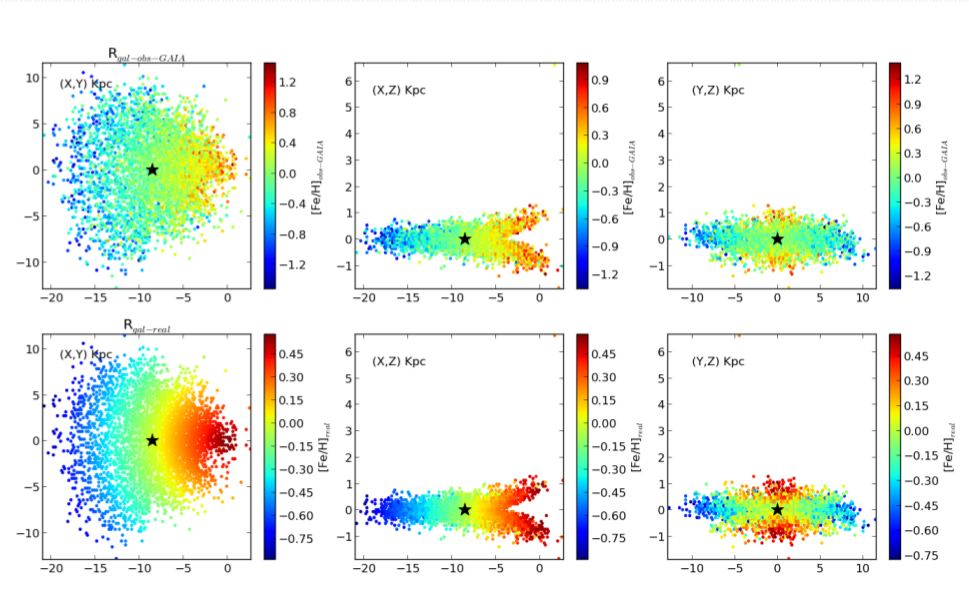
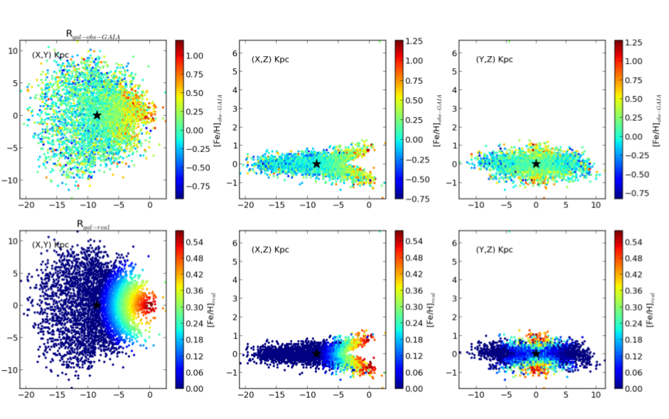

HOME-
ABOUT ME-
PUBLICATIONS-
REPOSITORIES-
PHOTOS
GAIA is view on the metallicity of the Milky Way Galaxy
In collaboration with:
Juan Nicolas Garavito (Msc. Student at Universidad de Los Andes, Colombia)
Jessica Tatiana Muñoz (Bsc. Student at Universidad Industrial de Santander, Colombia)
Patricia Sánchez (Ph.D. Student at Universidad Polité de Cataluña, Spain)
Figure 1: Metallicity Distribution with Negative Slope.

Figure 2: Metallicity Distribution with Negative and Constant Slope.

Aims